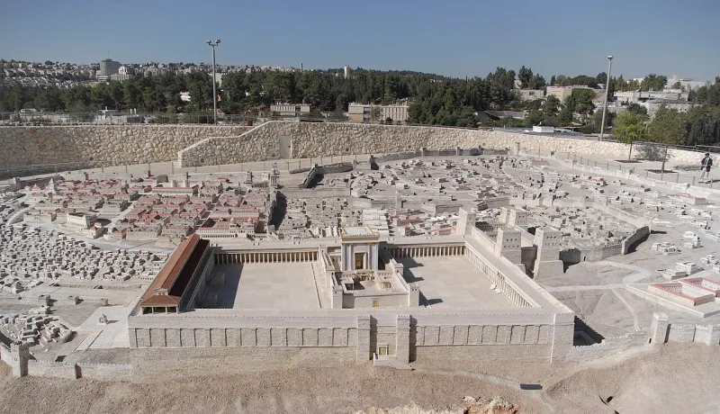
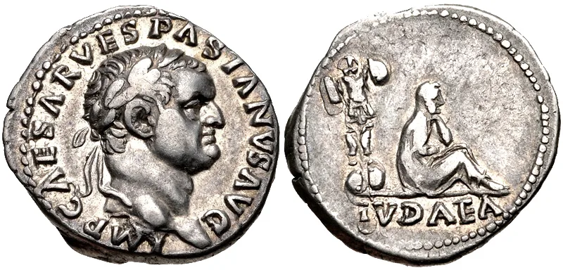
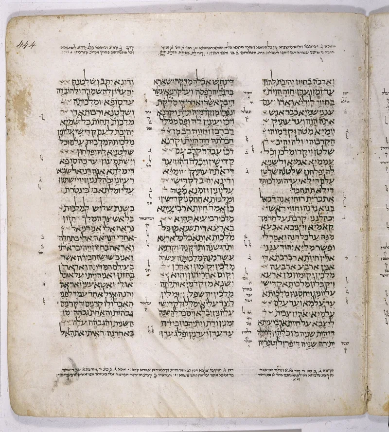

Serious people argue this both ways. Say so before your friend does.
Almost any prophecy can be placed somewhere in history if you push hard enough. That is why arguing about them rarely settles anything.
Daniel 9 is different. It puts events in a fixed order, and the last one has already happened.
Daniel 9:26 says an anointed one shall be "cut off, but not for himself." Then it says the people of a coming ruler shall "destroy the city and the sanctuary." The sanctuary is the Temple in Jerusalem. Rome burned it in AD 70.
The maths of Daniel's "seventy weeks" is genuinely argued about. There are several ways to count them and no agreement, even among Christians.
Do not pretend there is. But the order does not depend on the maths.
Cut off first. Temple destroyed second.
Contested, and say that. The order of events is strong.
The date maths is not settled. Lead with the order and give away the maths before anyone asks.
It is the only prophecy here with a deadline that has already passed. That makes it checkable in a way the others are not — and Daniel is a book your friend already accepts.
"Daniel 9:26 has someone cut off before the Temple is destroyed. The Temple fell in AD 70.
Who was that?"



Critical scholars date Daniel to the 160s BC and read the slain priest as Onias.
There are two replies, and the second is much stronger.
The first is the old one. Mashiach simply means an anointed person. Rashi reads the anointed one of verse 25 as Cyrus, and the one in verse 26 as King Agrippa. So the passage is about the Temple era, not a dying redeemer. The Talmud also curses those who count out the end (Sanhedrin 97b). Such sums breed false messiahs.
The critical reply is harder to answer. On that view Daniel 9 was written in the 160s BC. The anointed one 'cut off' is the high priest Onias III, murdered in 171 BC. The destroyer is Antiochus IV. The seventy weeks then end in the Maccabean crisis. On this reading the Christian count picks a convenient decree, and treats symbolic sabbath-year numbers as exact solar years.
Contested: the order of events holds, but the date maths does not.
Graded Contested — both sides have a real case. The Maccabean dating is the mainstream critical view, and it deserves to be named rather than ignored.
But something usable survives every reading a Jewish friend is likely to hold. On the traditional Jewish chronology — Seder Olam and Rashi — the seventy weeks run out at 70 AD. So by the tradition's own sums, whatever the passage is about, its clock stops when the Temple falls. That is the version to use.
Do not build on a precise start date. You cannot defend it, and a prepared friend will know that.